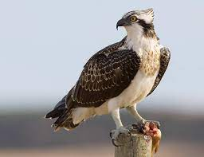
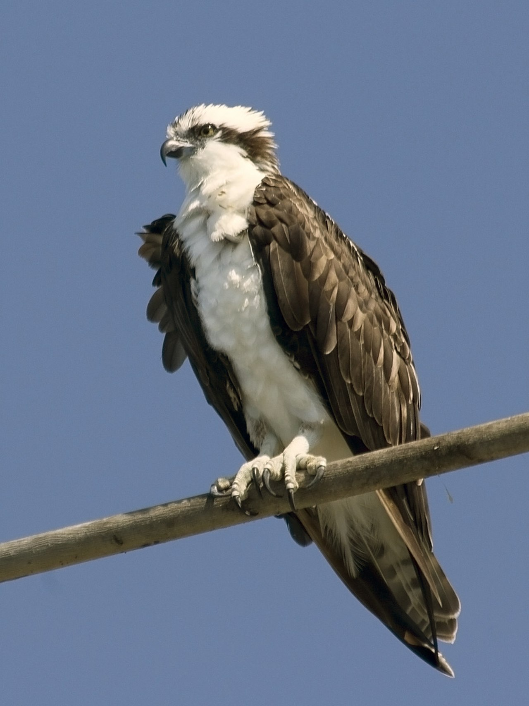

PANDIONIDOS
Pandionidae
Pandionidae
Pandion

Pandion es un género de aves accipitriformes de la familia Pandionidae distribuido por todo el mundo. El género Pandion es el único de la familia Pandionidae y fue descrito por el zoólogo francés Marie Jules César Savigny en 1809, tomando el nombre de un mítico rey griego, Pandíon.
Especies

Según un orden filogenético de la lista del Congreso Ornitológico Internacional se distinguen dos especies: Pandion haliaetus (Linnaeus, 1758), águila pescadora (occidental), extendida mundialmente salvo en Australia y Célebes con tres subespecies (P. h. haliaetus (Linnaeus, 1758), extendida por Europa y Asia; P. h. carolinensis (Gmelin, JF, 1788), desde Canadá al sur de los Estados Unidos; P. h. ridgwayi (Maynard, 1887), en Belice, Cuba y Bahamas.) y Pandion cristatus (Vieillot, 1816), águila pescadora oriental, desde Célebes a Australasia, Islas Salomón y Nueva Caledonia.